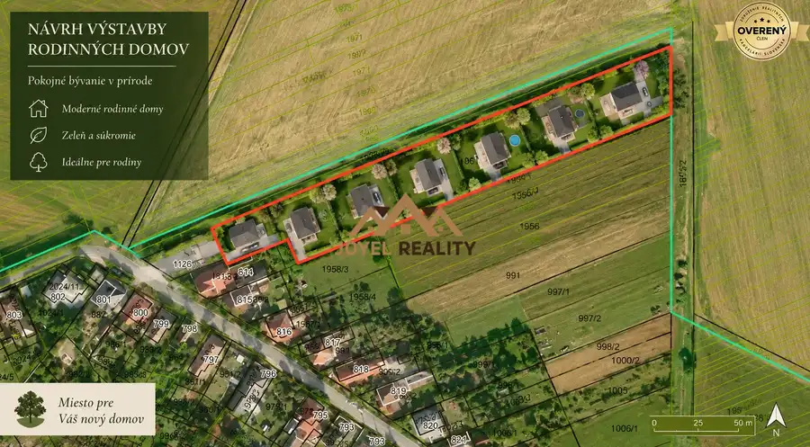
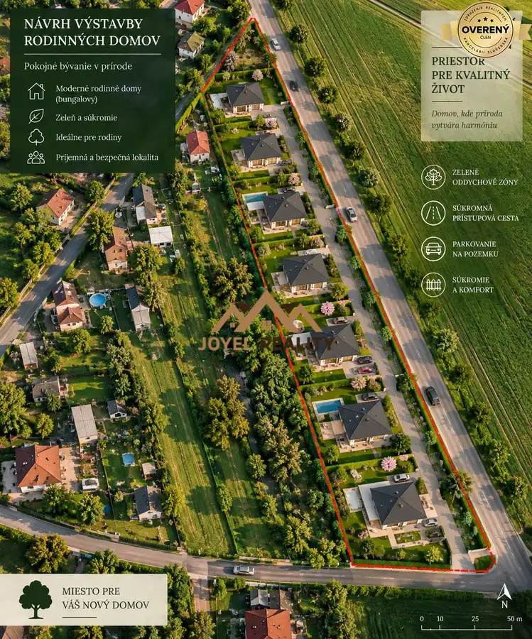
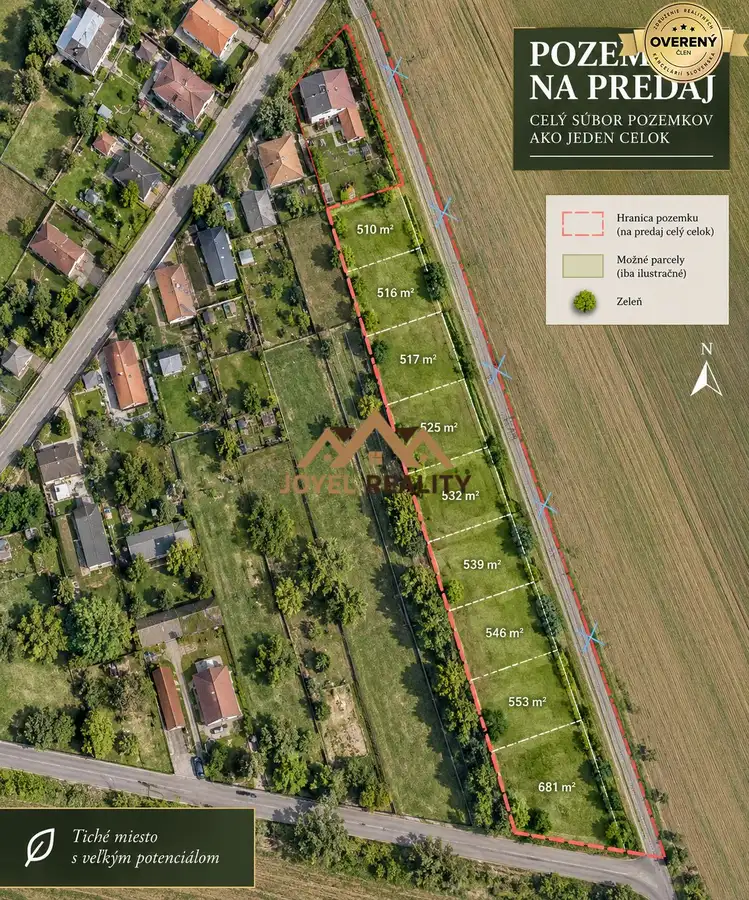
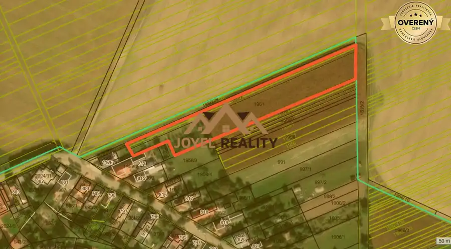

Pozemky na výstavbu rodinných domov – Diakovce
Diakovce




- Plocha7000 m²
- Poschodie0.
- Vlastníctvoosobné
O nehnuteľnosti
Exkluzívne iba v Joyel Reality Vám ponúkame na predaj atraktívny stavebno-investičný pozemok v obci Diakovce, len pár minút jazdy od okresného mesta Šaľa.
Pozemok s celkovou výmerou približne 7 000 m² sa nachádza v intraviláne obce a podľa nového UPI je na danom území možná výstavba rodinných domov.
Vďaka svojej výmere, polohe a možnosti budúcej výstavby predstavuje nehnuteľnosť zaujímavú príležitosť najmä pre developerov a investorov, ktorí hľadajú priestor na vytvorenie nového rezidenčného projektu.
ZÁKLADNÉ INFORMÁCIE:
• celková výmera pozemku: cca 7 000 m²
• pozemok sa nachádza v intraviláne obce Diakovce
• podľa nového UPI je územie vhodné na výstavbu rodinných domov
• možnosť vytvorenia pozemkov pre samostatne stojace rodinné domy
• predpokladaná výmera jednotlivých parciel približne 500 – 600 m²
• pokojná lokalita vhodná na rezidenčné bývanie
• predaj pozemku iba ako celku
• vhodné pre investora alebo developera
• bližšie informácie a UPI k dispozícii na vyžiadanie
LOKALITA
Diakovce ponúkajú príjemné a pokojné bývanie s dobrou dostupnosťou do okolitých miest. Okresné mesto Šaľa je vzdialené približne 6 km, pričom smerom na Galantu je možné pokračovať k napojeniu na hlavné cestné ťahy a rýchlostnú cestu R1.
Lokalita spája pokoj vidieckeho bývania s dostupnosťou mesta, čo vytvára dobrý predpoklad pre vznik nového projektu rodinných domov.
PREČO JE TÁTO PONUKA ZAUJÍMAVÁ?
Intravilán obce + cca 7 000 m² + možnosť výstavby podľa nového UPI + potenciál rozdelenia na parcely pre rodinné domy.
Ide o nehnuteľnosť, ktorá ponúka investorovi priestor na ďalšie projektové riešenie a vytvorenie atraktívnej rezidenčnej lokality.
CENA: 40€/m²
Pozemok sa predáva výhradne ako celok.
V prípade vážneho záujmu Vám radi poskytneme podrobnejšie informácie, UPI a dohodneme osobnú obhliadku pozemku.
Kontakt:
Bc. Lucia Kanišová, tel.: , e-mail.:
Parametre
- Rozloha pozemku
- 7000 m²
- Celková rozloha
- 7000 m²
- Poschodie
- prízemie
- Vlastníctvo
- osobné
- Status
- aktívne
- Voda
- verejný vodovod
- El. napätie
- 230V
- Plyn
- áno
- Kanalizácia
- nie
- Terén
- rovina
- Prístupová cesta
- betónová cesta
- Pripravené na výstavbu
- schválené v územnom pláne
- Dátum zverejnenia
- 2026-09-09